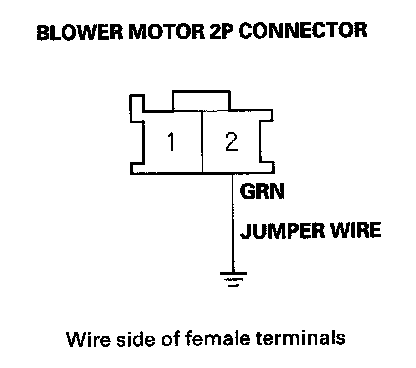
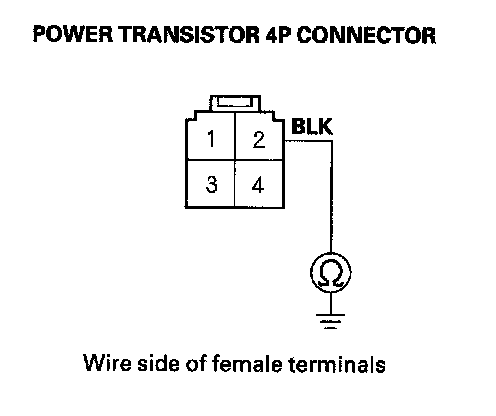
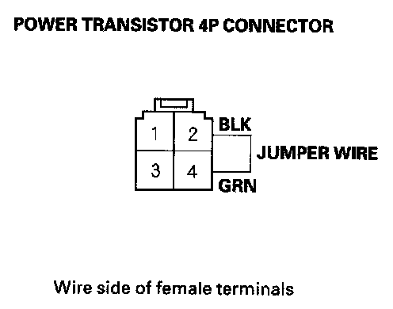
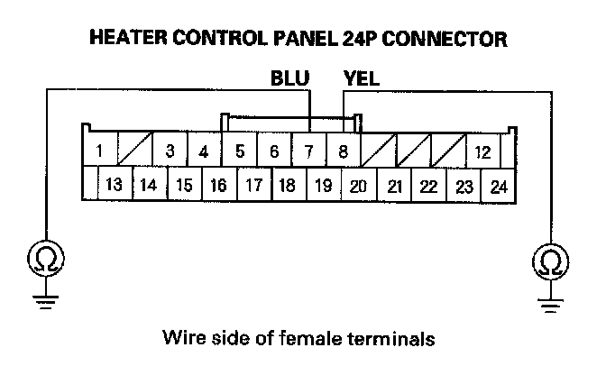
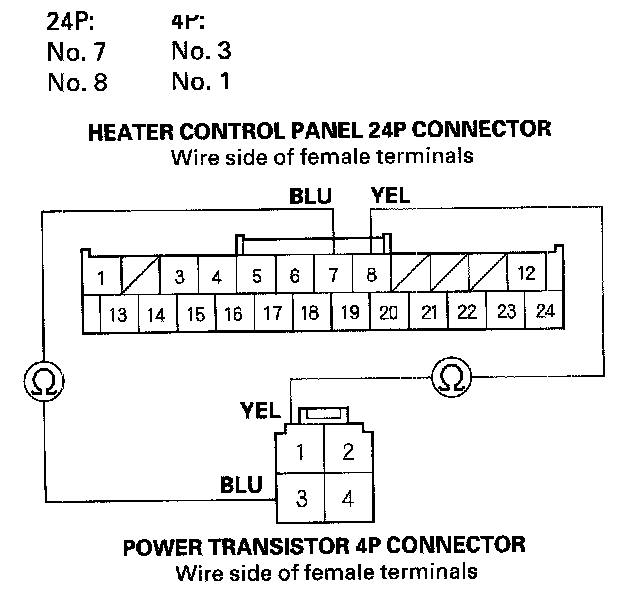
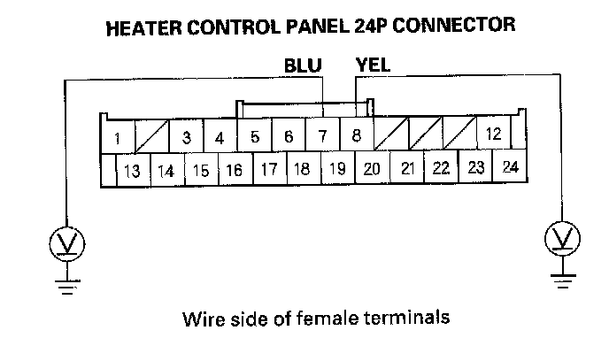
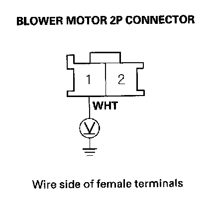
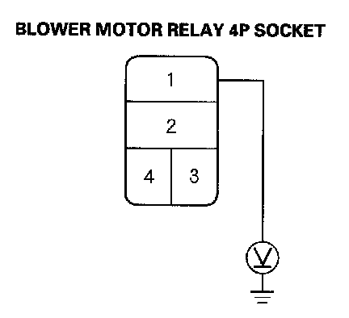
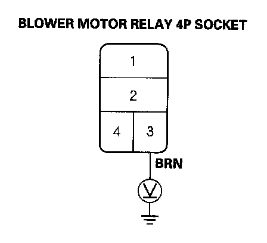
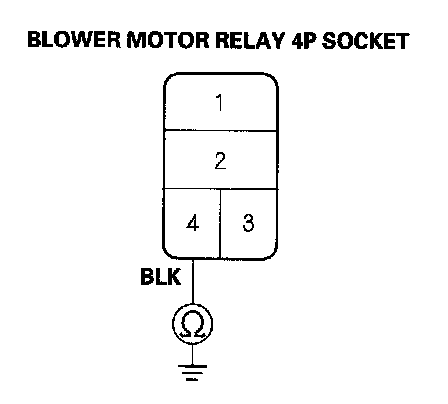

Heating
DTC indicator 6: A Problem in the Blower Motor Circuit1. Clear the DTC.
2. Turn the ignition switch OFF, and then ON (II).
3. Do the self-diagnostic with the heater control panel.
4. Check for DTCs.
Is DTC 6 indicated?
YES - Go to step 5.
NO - Intermittent failure, check for loose wires or poor connections on the blower motor circuit.
5. Turn the ignition switch OFF.
6. Check the No. 9 (40 A) fuse in the under-hood fuse/relay box, and the No. 36 (10 A) fuse in the under-dash fuse/relay box.
Are the fuses OK?
YES - Go to step 7.
NO - Replace the fuses, and recheck.

7. Connect the blower motor 2P connector terminal No. 2 to body ground with a jumper wire.
8. Turn the ignition switch ON (II).
Does the blower motor run?
YES - Go to step 9.
NO - Go to step 24.
9. Turn the ignition switch OFF.
10. Disconnect the jumper wire.
11. Disconnect the power transistor 4P connector.

12. Check for continuity between the power transistor 4P connector terminal No. 2 and body ground.
Is there continuity?
YES - Go to step 13.
NO - Check for an open in the wire between the power transistor and body ground. If the wire is OK, check for poor ground at G401.

13. Connect the power transistor 4P connector terminals No. 2 and No. 4 with a jumper wire.
14. Turn the ignition switch ON (II).
Does the blower motor run at high speed?
YES - Go to step 15.
NO - Repair open in the GRN wire between the power transistor and the blower motor.
15. Turn the ignition switch OFF.
16. Disconnect the jumper wire.
17. Disconnect the heater control panel 24P connector.

18. Check for continuity between body ground and the heater control panel 24P connector terminals No. 7 and No. 8 individually.
Is there continuity?
YES - Repair any short to body ground in the wires between the heater control panel and the power transistor.
NO - Go to step 19.

19. Check for continuity between the following terminals of the heater control panel 24P connector and the power transistor 4P connector.
Is there continuity?
YES - Go to step 20.
NO - Repair any open in the wires between the heater control panel and the power transistor.
20. Turn the ignition switch ON (II).

21. Measure the voltage between body ground and the heater control panel 24P connector terminals No. 7 and No. 8 individually.
Is there voltage?
YES - Repair short to power in the wires.
NO - Go to step 22.
22. Reconnect the heater control panel 24P connector.
23. Test the power transistor.
Is the power transistor OK?
YES - Check for loose wires or poor connections at the heater control panel 24P connector and at the power transistor 4P connector. If the connections are good, substitute a known-good heater control panel, and recheck. If the symptom/indication goes away, replace the original heater control panel.
NO - Replace the power transistor.
24. Disconnect the jumper wire.
25. Disconnect the blower motor 2P connector.

26. Measure the voltage between the blower motor 2P connector terminal No. 1 and body ground.
Is there battery voltage?
YES - Replace the blower motor.
NO - Go to step 27.
27. Turn the ignition switch OFF.
28. Remove the blower motor relay from the under-hood fuse/relay box, and test it.
Is the relay OK?
YES - Go to step 29.
NO - Replace the blower motor relay.

29. Measure the voltage between the blower motor relay 4P socket terminal No. 1 and body ground.
Is there battery voltage?
YES - Go to step 30.
NO - Replace the under-hood fuse/relay box.
30. Turn the ignition switch ON (II).

31. Measure the voltage between the blower motor relay 4P socket terminal No. 3 and body ground.
Is there battery voltage?
YES - Go to step 32.
NO - Repair open in the wire between the No. 36 (10 A) fuse in the under-dash fuse/relay box and the blower motor relay.
32. Turn the ignition switch OFF.

33. Check for continuity between the blower motor relay 4P socket terminal No. 4 and body ground.
Is there continuity?
YES - Repair open in the WHT wire between the blower motor relay and the blower motor.
NO - Check for an open in the wire between the blower motor relay and body ground. If the wire is OK, check for poor ground at G301.